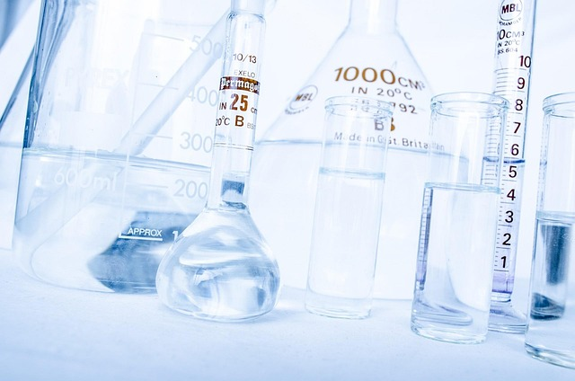

A água, representada pela fórmula H2O, é essencial para a vida. O dióxido de carbono possui a fórmula CO2, enquanto o gás oxigênio é O2.
Em reações químicas, é importante observar as proporções dos elementos. Por exemplo, na reação de combustão do hidrogênio:
2H2 + O2 → 2H2O
Em matemática, usamos expoentes para representar potências. Por exemplo, 23 = 8 significa que 2 multiplicado por si mesmo três vezes resulta em 8.
O número de Avogadro é 6,02 x 1023, representando a quantidade de partículas em um mol de substância.
